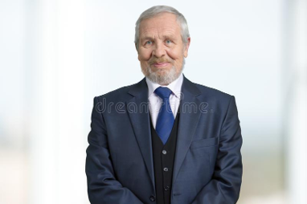

Somos una agencia de turismo familiar dedicada a la venta de pasajes con destinos nacionales e internacionales.
Encontrá en nuestra propuesta los mejores paquetes, precios y mejor atención. Somos garantia de calidad en turismo
Staff: GERENTE GENERAL Lic. Horacio Lombardi
 Licenciado en turismo y hoteleria egresado de la Universidad Nacional de Buenos Aires. Fundó la agencia en el año 1990, generando una nueva impronta en la forma de viajar
SOCIO EJECUTIVO Dr. Lucas Ibarrola
Doctor en derecho, egresado de la universidad de Belgrano en el año 1995, fundó la agencia junto al Lic. Horacio Lombardi, asesorandolo en el area legal, permitiendo a los clientes ofrecer la mejor experiencia en viajes